01. Understand
Xác định người dùng đang vướng ở đâu, thao tác nào lặp lại và kết quả họ thực sự cần.
Biến những vấn đề thực tế thành công cụ số gọn gàng, hữu ích và dễ sử dụng.
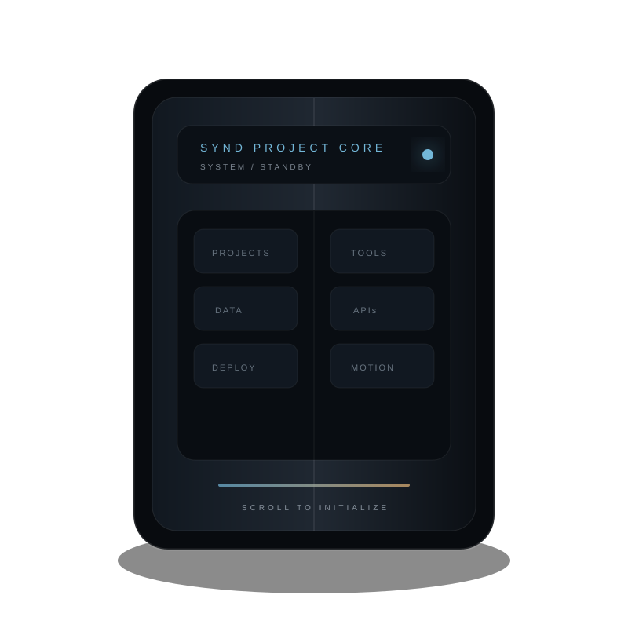
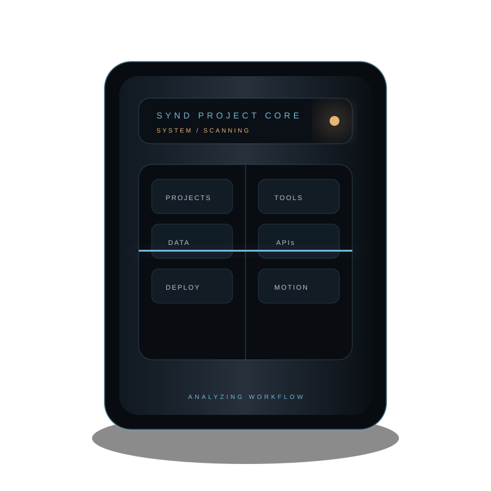
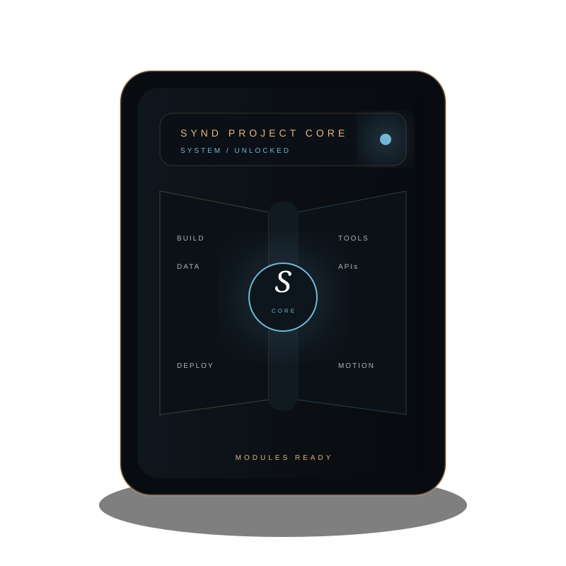
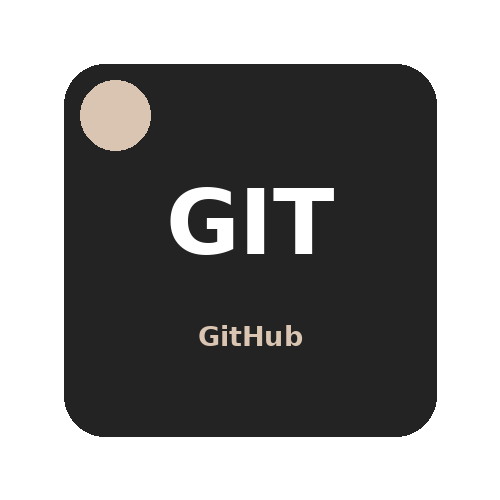
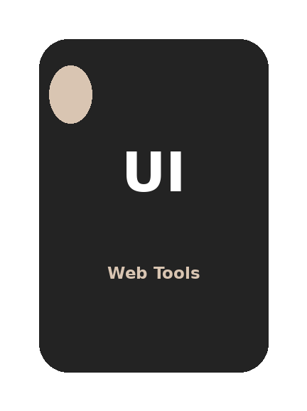
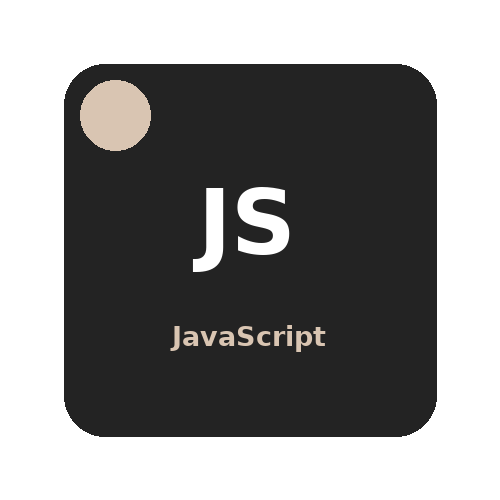
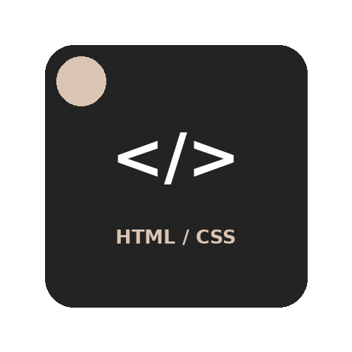
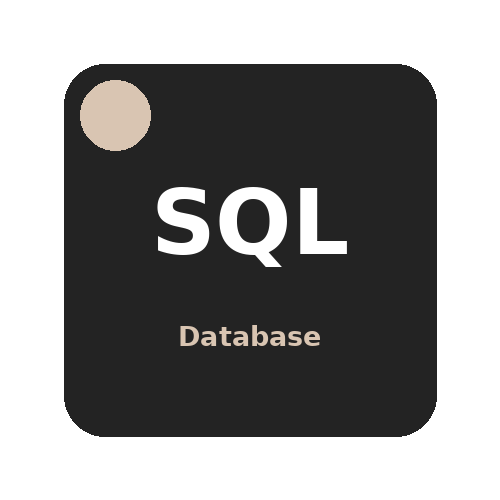
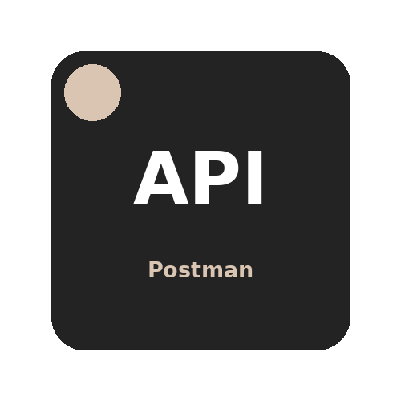
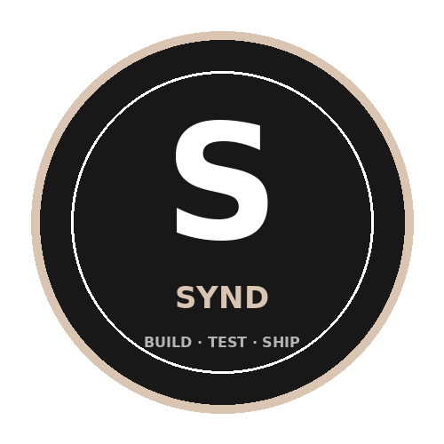
Có vấn đề nào đang tốn thời gian mỗi ngày?
Tìm đúng pain point, làm tool nhỏ, test thật rồi cải thiện.
Ship một bản chạy được trước nhé 👀
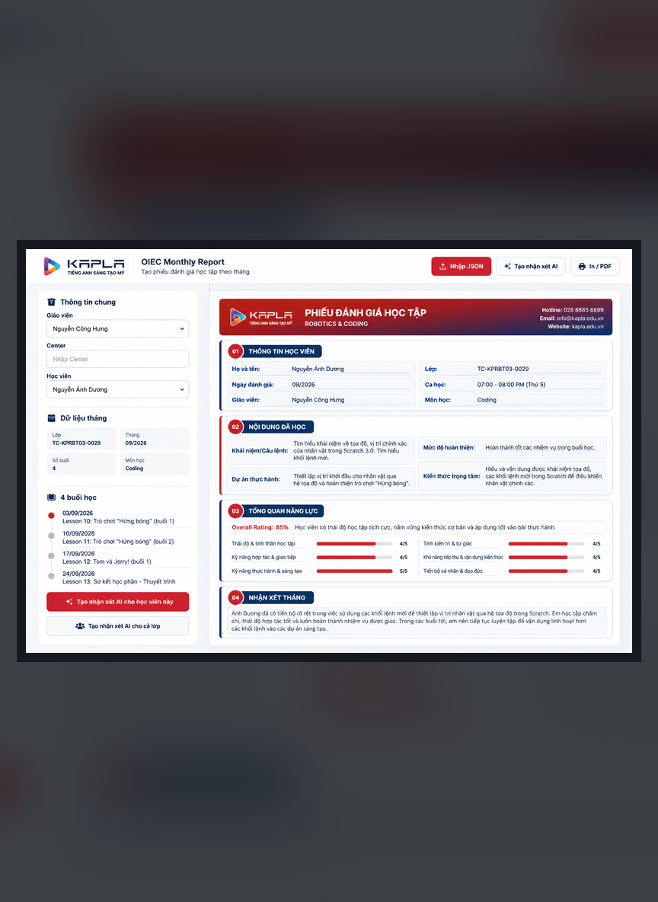
Kapla EMSWeb Tool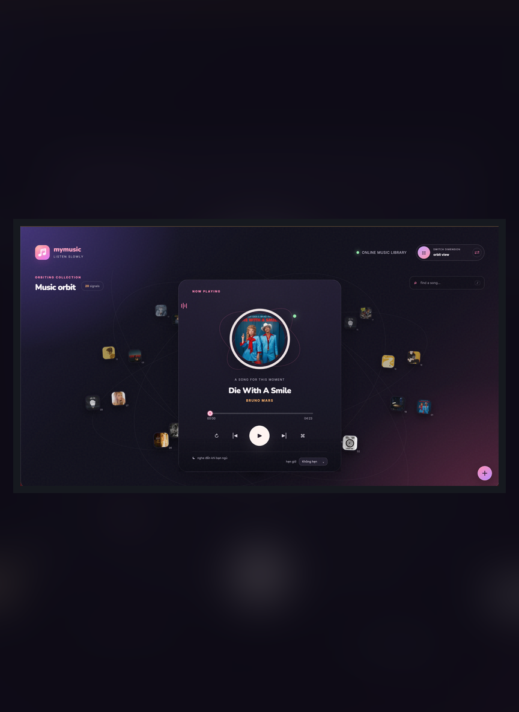
MyMusicMusic UI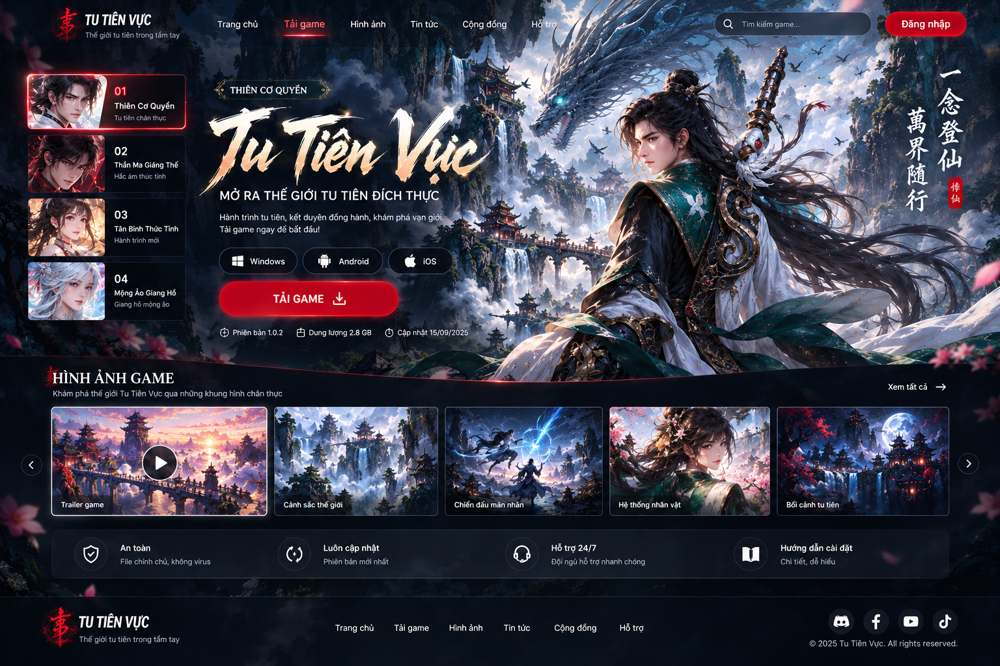
Tu Tiên VựcFull WebsiteTôi thích bắt đầu từ những việc đang bất tiện, lặp lại hoặc mất thời gian trong công việc hằng ngày.
Web tool, automation và các prototype nhỏ — ưu tiên dễ dùng, chạy được và giải quyết đúng việc.
Tìm lỗi, đọc dữ liệu, test luồng và chỉnh sản phẩm dựa trên cách người dùng thực sự sử dụng.
Mỗi project là một lần học thêm về frontend, triển khai, API và cách biến ý tưởng thành thứ có thể sử dụng.
Không cố làm mọi thứ phức tạp. Tôi thường bắt đầu nhỏ, test sớm và cải thiện từ phản hồi thực tế.
Xác định người dùng đang vướng ở đâu, thao tác nào lặp lại và kết quả họ thực sự cần.
Làm prototype chạy được, kiểm tra luồng chính, dữ liệu và những lỗi phát sinh khi dùng thật.
Đưa sản phẩm lên web, tiếp tục sửa UI/UX và tối ưu dựa trên nhu cầu thực tế.
Các project của tôi thường bắt đầu từ một việc nhỏ đang gây bất tiện: nhập liệu, tạo nhận xét, báo cáo, trình bày dữ liệu hoặc một trải nghiệm web chưa đủ tốt.
Một vài project nổi bật: từ website sản phẩm hoàn chỉnh đến các tool nội bộ giúp giảm thao tác thủ công trong công việc.
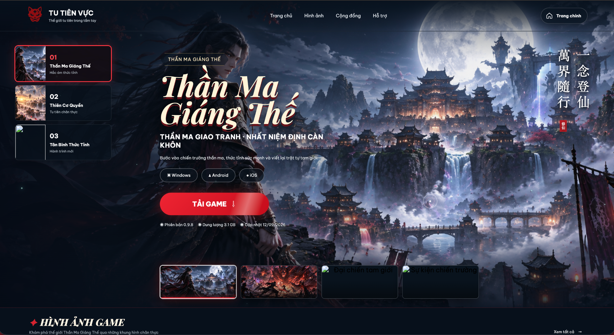
GAME EXPERIENCE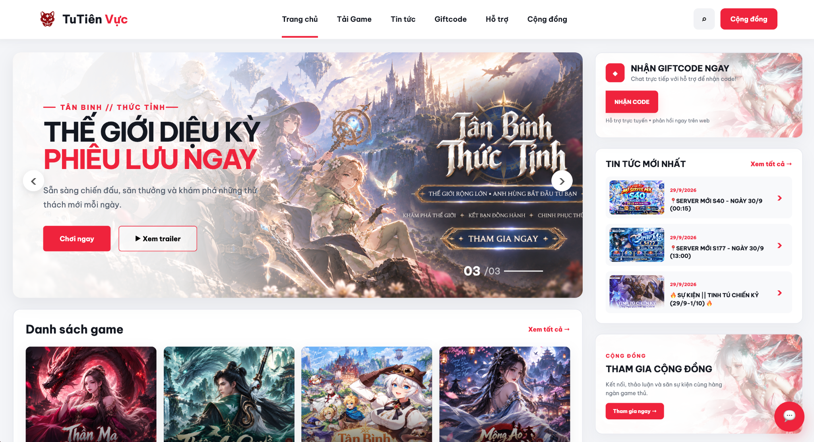
MAIN PORTAL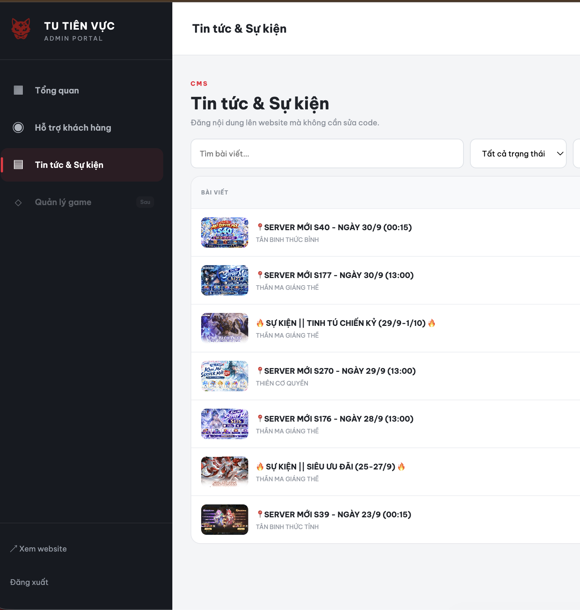
ADMIN / CMS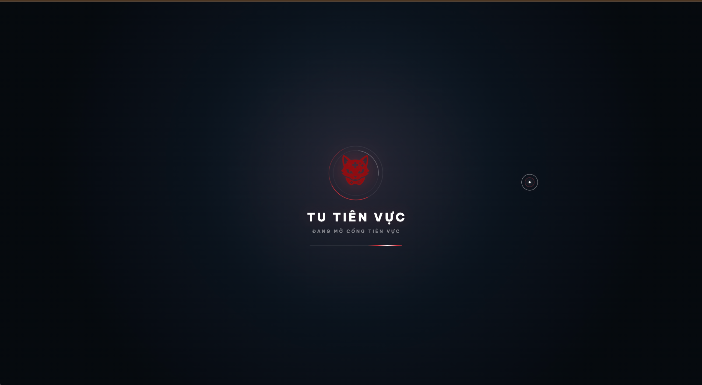
BRANDINGWebsite game tiên hiệp với landing cinematic, download portal, gallery, CMS/Admin và hệ thống chat realtime. Một project hoàn chỉnh từ giao diện đến vận hành.
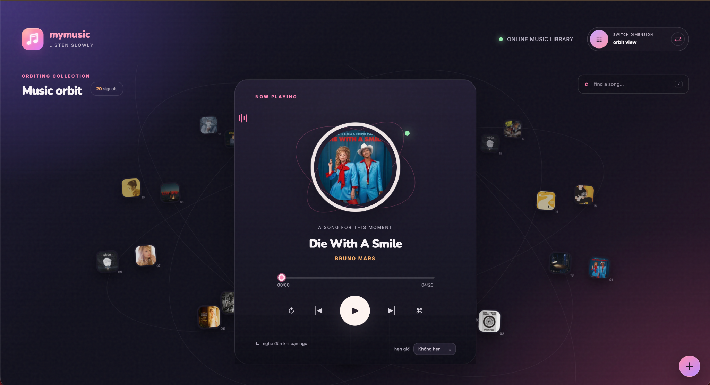
02Music player cá nhân với Orbit View, List View, responsive playback, search, timer và motion UI.
Ba tool cùng phục vụ một workflow công việc, nên t gom thành một nhóm thay vì tách thành ba project lớn.
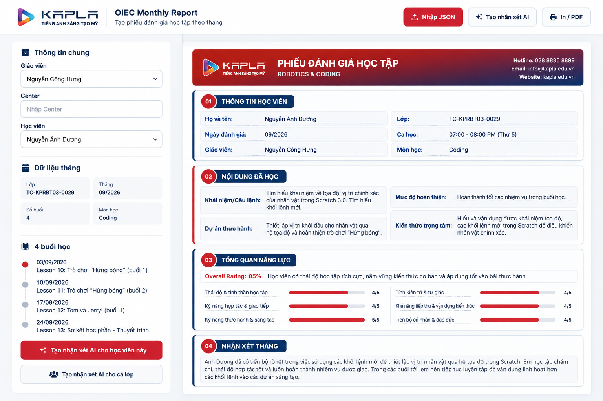
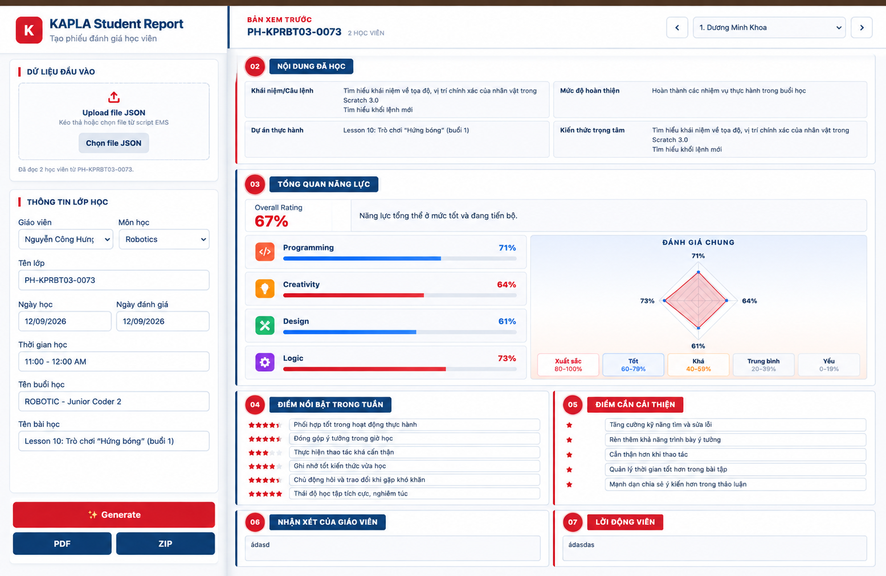

Tôi có kinh nghiệm làm việc trong môi trường giáo dục công nghệ, đồng thời tự xây các web tool phục vụ công việc và các project cá nhân.
Software Implementation / IT Support là hướng tôi muốn phát triển: triển khai, hỗ trợ người dùng, xử lý vấn đề và hiểu cách hệ thống vận hành.
HTML/CSS, JavaScript, SQL, Postman, Jira; cùng GitHub, Vercel và các API khi project cần.
Đây vốn là một motion study. Tôi giữ lại chuyển động ban đầu và biến toàn bộ trải nghiệm thành portfolio cá nhân thay vì dùng một template CV thông thường.
Tôi luôn sẵn sàng trao đổi về cơ hội công việc và những project thú vị.